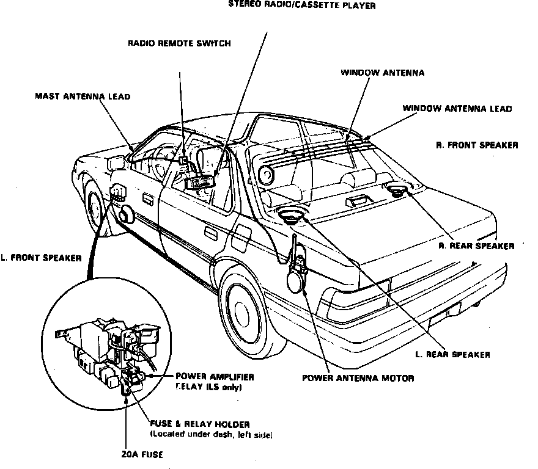

Operation CHARM
: Car repair manuals for everyone.
Home
>>
Acura
>>
1988
>>
Legend Sedan V6-2675cc 2.7L SOHC FI
>>
Repair and Diagnosis
>>
Accessories and Optional Equipment
>>
Radio, Stereo, and Compact Disc
>>
Audio Control Relay
>>
Locations
Audio Control Relay: Locations
Sound System Components.:

LH Side Of Trunk
Applicable to: 1988 Legend